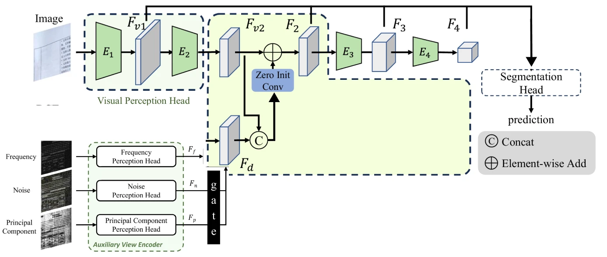
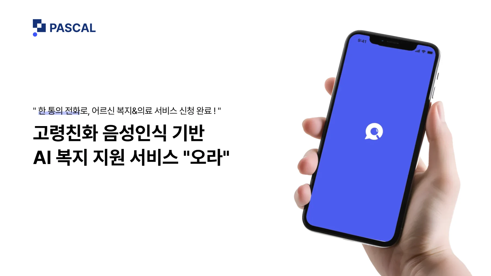

안채연
강원대학교 AI융합학과 · 컴퓨터비전 연구실 학부연구생
컴퓨터비전 연구실에서 모델 실험을 하고, 문서 데이터 처리와 음성 AI 서비스를 만들어 봤습니다.
SOTA 모델의 모듈을 빼고 붙여 성능을 비교했습니다

0.806 → 0.846
| 지표 | 기존 | 개선 |
|---|---|---|
| Precision | 0.796 | 0.860 |
| Recall | 0.816 | 0.832 |
| F1-score | 0.806 | 0.846 |
GPU 서버에서만 돌던 연구 모델을 노트북 CPU에서 돌렸습니다
처음에는 원본과 결과가 달랐습니다
같은 이미지의 같은 영역을 재구현 모델은 0.84, 원본은 0.004로 판단했습니다. 의심한 원인을 하나씩 지웠습니다.
- GPU 연산 정밀도 (TF32)
- GPU와 CPU 연산 차이
- 테스트 이미지 저장 과정
- 재구현 구조 → 원인
stride = [1]
if stride == 1:
x = x + inputs[1] == 1은 False라서 마지막 줄이 실행되지 않았습니다. 재구현도 원본 동작에 맞췄습니다.
827 → 0
100%
소수점 셋째 자리 반올림0.4697
원본 0.4698INT8로 바꾼다고 무조건 빨라지지는 않았습니다
Conv까지 INT8로 바꾸면 ONNX Runtime CPU에서 최적화가 덜 된 연산(ConvInteger)을 거쳐 오히려 느려졌습니다. 그래서 연산 대부분을 차지하는 MatMul만 INT8로 바꿨습니다.
노트북 CPU 4스레드 · 이미지 1장(512×512) · 20회 평균
결과
−59%
424.7MB → 173.5MB가중치를 INT8로 저장−37%
4.2초 → 2.6초PyTorch 원본 대비유지
0.4697 → 0.4729테스트 이미지 30장 기준, 오차 범위 안. 앞선 연구의 F1과는 모델·데이터 조건이 다릅니다.레이아웃이 제각각인 손글씨 검사지를 데이터로 바꿨습니다
91%
약 1,100건 중 약 1,000건 정상 처리
- 원본 인식 결과는 따로 보존
- 원본 글씨 품질 문제를 빼면 거의 모두 처리
- 결과물은 데이터 분석 연구실이 수용
넘긴 데이터에서 나온 오류를 원본과 대조해 다시 반영했습니다
모든 질문을 LLM에 보내지 않고, 질문 종류에 따라 길을 나눴습니다
어르신이 전화로 AI와 대화하는 서비스입니다. 모든 답을 LLM이 만들어 4~6초씩 걸려 통화처럼 느껴지지 않았습니다.
4~6초 → 1~2초
50회 테스트에서 오류는 1~2회였고, 당시 서비스에 적용했습니다.

음성 인식 모델을 같은 기준으로 비교했습니다
Whisper tiny·base·small을 같은 문장으로 시험해 오류율을 비교했습니다. 낮을수록 정확합니다. 하나를 골라 파인튜닝까지 진행했지만, 서비스 적용은 보류됐습니다.
규칙이 끝없이 늘어나지 않도록 프롬프트를 네 층으로 설계했습니다
문제가 생길 때마다 프롬프트에 예시를 덧붙이면 규칙이 계속 늘어났습니다. 그래서 응답이 네 층을 차례로 거치는 구조와, 사용자 정보와 RAG 결과를 합쳐 통화마다 프롬프트를 만드는 구조를 설계했습니다.
사용자 발화"무릎이 너무 아파"
최종 응답"저런, 비 오는 날이면 더 쑤시죠? 파스는 붙이셨어요?"
직접 만든 분류 모델을, 서비스 목적에 맞지 않아 빼자고 제안했습니다
질문을 RAG로 보낼지 판단하는 문장 분류 모델을 만들었습니다.
분류 단계가 추가되면서 응답이 다시 느려졌습니다. 필요한 판단은 RAG와 LLM 두 갈래뿐인데, 여러 카테고리로 먼저 나누는 구조라 단계가 과했습니다.
팀장에게 먼저 의견을 말했고, 함께 대표에게 전해 서비스에 넣지 않기로 했습니다.
재미로 사는 쇼핑과 필요해서 사는 쇼핑은 구매까지 가는 과정이 다를까?
- Spark SQL·PySpark로 행동 로그 조회·가공
- 세션 요약 6개 + 클릭 유형 13개 = 행동 변수 19개 설계
- 구매 4단계 퍼널 전환율 계산
- 카이제곱·피셔 정확 검정, 크래머 V로 집단 차이 검증
| 응답 | 집단 | 규모 |
|---|---|---|
| 3~5점 | 재미형 | 27명 · 281세션 |
| 1~2점 | 필요형 | 19명 · 229세션 |
| 무응답 | 제외 | 7명 |
전체 692세션 중 510세션 분석. 'other' 클릭, 단순 오류성 클릭, 단계가 모호한 구매 클릭은 제외했습니다.
클릭 로그를 구매 4단계 퍼널로 매핑하고, 세션을 변수 19개로 바꿨습니다
이 19개 변수가 팀의 Random Forest·SHAP 분석 입력으로 쓰였습니다
구매 단계로 갈수록 차이가 커졌지만, 통계적으로 유의하지는 않았습니다
4단계 구매 전환율은 재미형이 7%p 높았지만 p=0.09, 크래머 V=0.074로 효과가 작았습니다. 표본이 작아 검정력이 부족했을 가능성과, 두 집단이 실제로 비슷할 가능성을 함께 보고했습니다.
검정 방법을 하나씩 더해, '유의하지 않음'을 정확하게 해석했습니다
두 집단의 단계별 전환율 차이가 우연인지 확인
4단계 p = 0.095표본이 작아 근사 없이 정확한 확률로 다시 확인
4단계 p = 0.090유의성과 별개로 차이의 크기(효과 크기)를 확인
0.000 → 0.074수업 실습에서 LLM 없이 MLP부터 ResNet까지 구현했습니다
그 밖의 경험
강의 보조 프로그램 NODOIT교육 기업 하계 인턴 · 사업개발 1팀, 3인 팀 · 2026.07
강의 자료를 올리면 AI가 학습 로드맵을 만들고, 학생은 익명으로 질문하며 실시간으로 진도를 따라갑니다.
- 과업 지시서를 작성해 기능과 목표 정의
- IT에 익숙하지 않은 강의자를 위한 단순한 화면 설계
- 3주 안에 끝내도록 기능 우선순위를 조율해 범위 축소
- 기술 스택 버전·유지보수 비용 문서화, 최종 발표
기한 안에 완성해 발표했고, 회사가 도입을 검토해 유지보수 문서를 전달했습니다. 개발은 팀원이 맡았습니다.
Nurspace 간병인 매칭 웹멋쟁이사자처럼 해커톤 · 2024
UI 디자인과 React 화면 구현을 맡았습니다.
About
- 학력
- 강원대학교 AI융합학과 (2027.02 졸업 예정)
- 연구
- 컴퓨터비전 연구실 학부연구생 (2026.01~)
- 인턴
- IT교육 기업 하계 인턴 (2026, 1개월)
- 활동
- 창업동아리 PASCAL팀 AI 파트 (2025)멋쟁이사자처럼 프론트엔드 트랙 (2024)
- 기술
- Python · PyTorch · Spark SQL · PySpark · ONNX Runtime · Hugging Face · LangChain · Gemini API · Google Vision API
- CS 기초
- 자료구조 · 컴퓨터구조 수강, C언어 개인 학습
- 수상
- 보건복지부장관상 최우수상 (2025.07)성균관대 컨소시엄 산학협력 팀프로젝트 동상 (2025.10)중소벤처기업부장관상 특별상 (2025.12)
- 작업 방식
- 코드는 AI 코딩 도구로 작성하고, 문제 정의와 구조 설계, 결과 검증은 직접 합니다. 모델은 같은 기준으로 측정해 비교한 뒤 고릅니다.